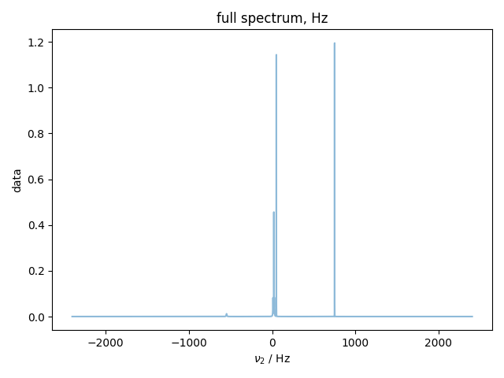
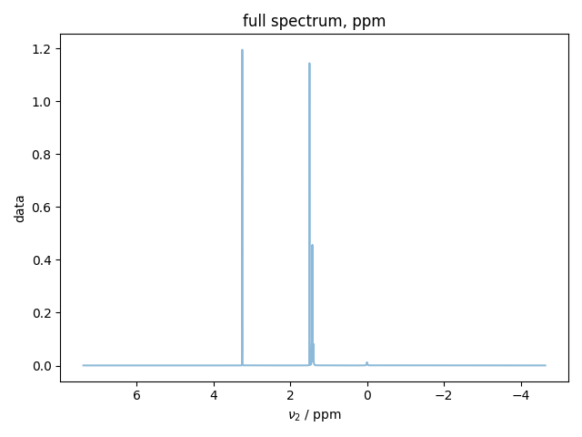
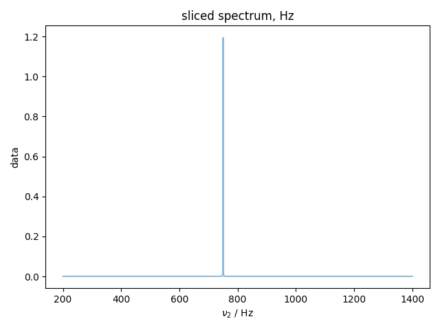
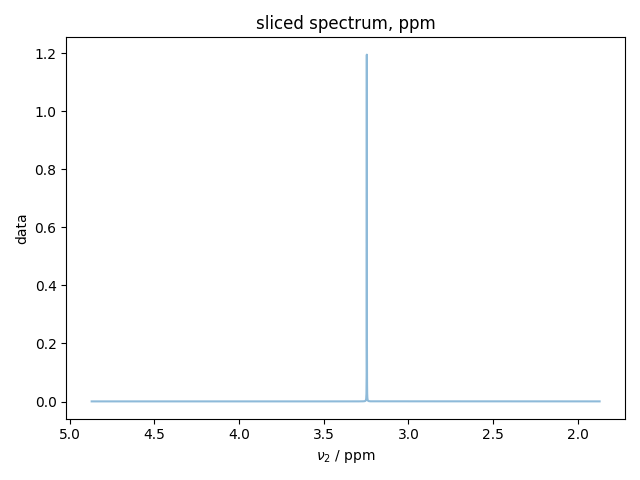

Note
Click here to download the full example code
ppm Example¶
Demonstrates how to convert from offset in Hz to ppm scale
- 
- 
- 
- 
from pylab import *
from pyspecdata import *
#pull parameters from RM1_sept30_1H_211001 expno 1
# make peaks on a frequency axis
x = nddata(r_[0:6.8157439:32768j], "t2")
x.set_units("t2", "s")
# generate time-domain signal
SW_h = 1./(x.getaxis('t2')[1] - x.getaxis('t2')[0])
signal = 0 * x # create an array of zeros that's the right shape
SFO1 = 400.1307334
BF1 = 400.13
SF = 400.1301846
TMS_shift = (SF-SFO1)*1e6
for A, nu, R in [
(0.3, TMS_shift, 0.04),
(1, 25, 0.08),
(1, 50, 1.2),
(1, 20, 0.45),
(1, 750, 1.2),
(1, 10, 0.08),
]:
#nu = SFO1 + nu # it's really unclear why this is done!
signal += A * exp(1j * 2 * pi * nu * x - x / R)
signal.set_units("t2", "s")
signal.ft("t2", shift=True)
OFFSET = (SFO1/SF-1) * 1.0e6 + 0.5 * SW_h * SFO1/SF
signal.set_prop('acq',{'SFO1':SFO1,'SW_h':SW_h})
signal.set_prop('proc',{'SF':SF,
'OFFSET':OFFSET})
# Copy of signal to demonstrate truncation
signal_sliced = signal.C
with figlist_var() as fl:
fl.next("full spectrum, Hz")
fl.plot(signal)
signal.to_ppm()
fl.next("full spectrum, ppm")
fl.plot(signal)
signal_sliced = signal_sliced["t2":(0.2e3, 1.4e3)]
fl.next("sliced spectrum, Hz")
fl.plot(signal_sliced)
signal_sliced.to_ppm()
fl.next("sliced spectrum, ppm")
fl.plot(signal_sliced)
Total running time of the script: ( 0 minutes 0.546 seconds)